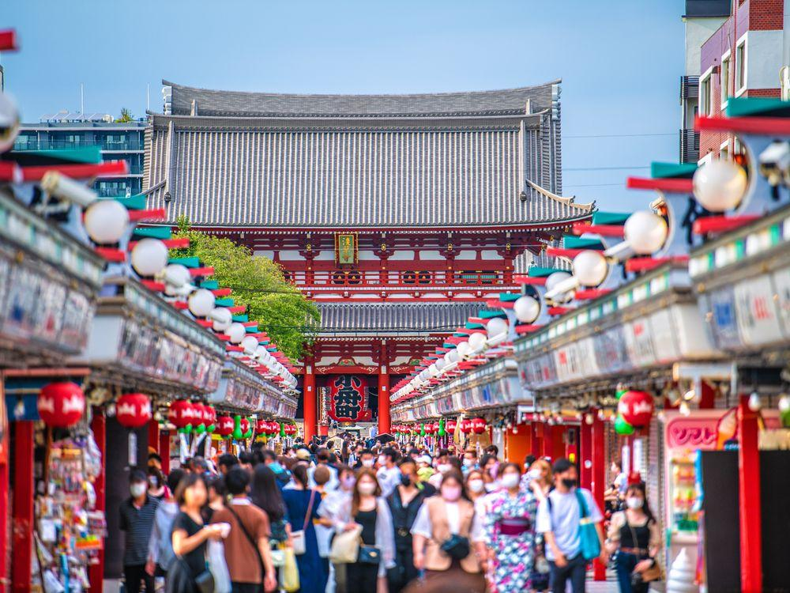

EXPLORE THE CITY
From the peaceful streets of Asakusa to the bright lights of Shibuya, every neighborhood in Tokyo has its own personality.
Explore traditional temples, local shops, and lively streets. Each corner offers a new experience and a different side of the city.